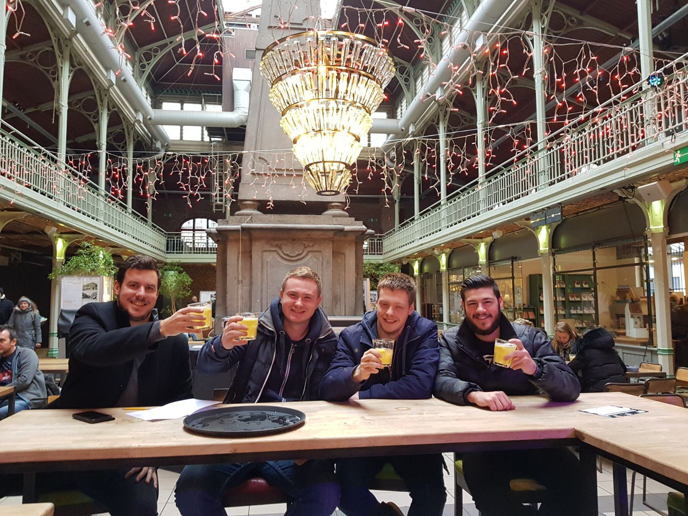
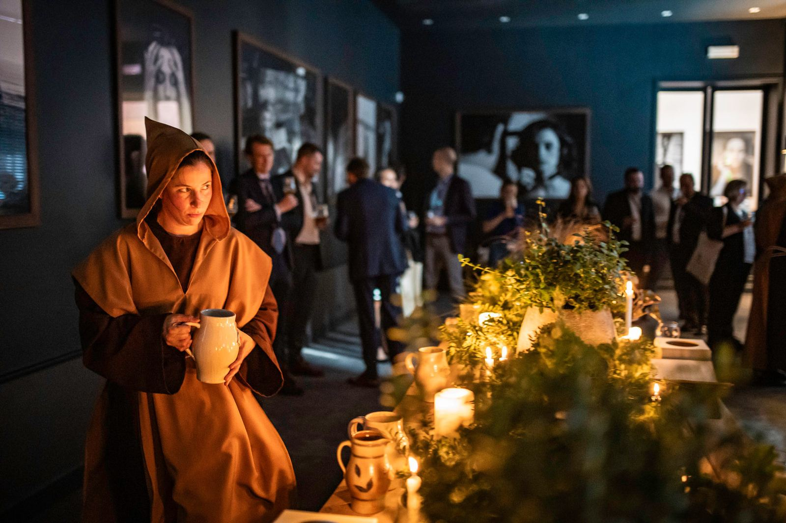
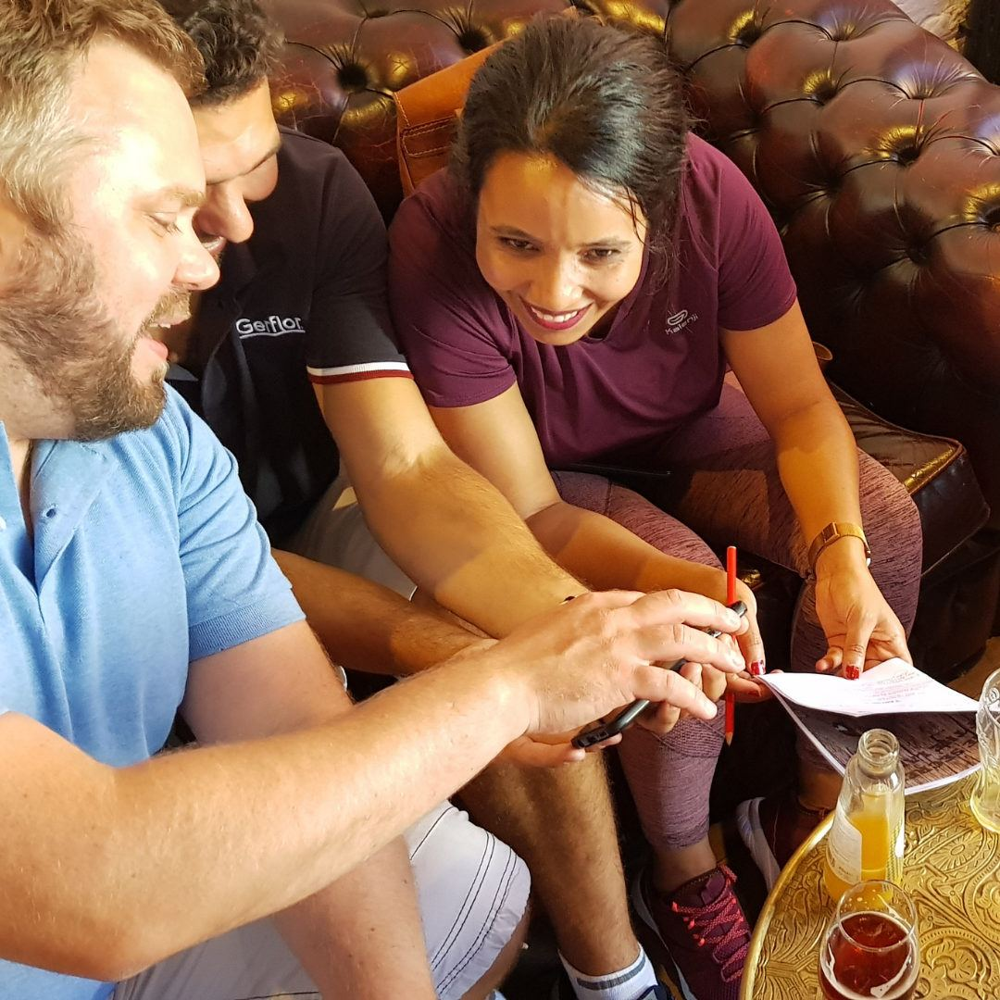
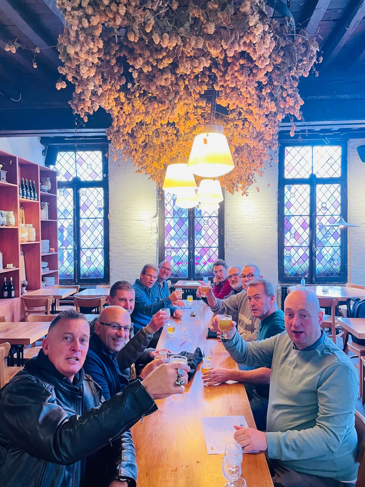
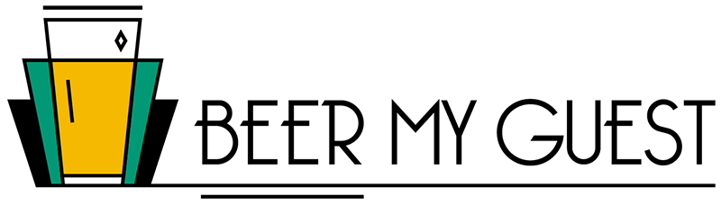
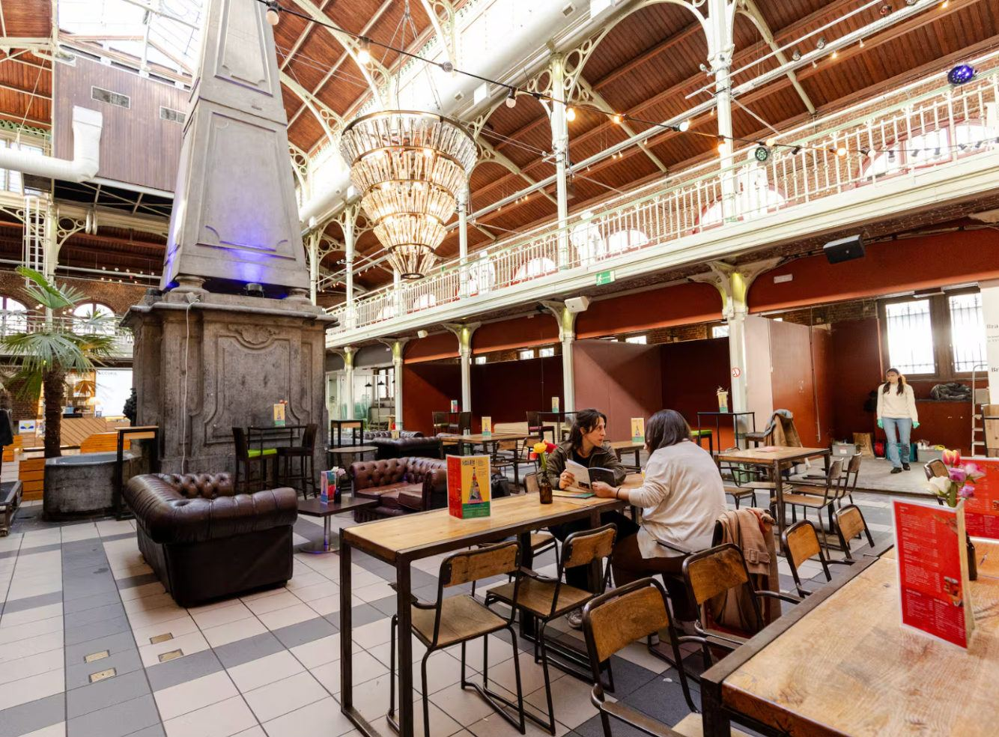

Agence réceptive locale · DMC · Bruxelles
Vivez la Belgique, une bière à la fois.
Dégustations, jeux de piste, team-buildings et événements sur mesure : nous vous faisons découvrir Bruxelles et la Belgique de l’intérieur, comme on reçoit des amis.
★★★★★
Pour qui ?
Une expérience pensée pour votre groupe.
Entreprises, agences ou particuliers : choisissez votre univers, nous adaptons le format, la durée et le lieu à vos envies.

Entreprises & agences MICE
Team-buildings, incentives & soirées
Des animations de soirée, des team-buildings indoor et outdoor, des incentives et l’organisation d’événements, pour renforcer la cohésion et créer des souvenirs mémorables.
- Team-building
- Incentives
- Animations de soirée
- Services DMC

Particuliers
Entre amis, en famille ou en couple
Jeux de piste et découvertes de Bruxelles sous l’angle de la bière et du chocolat, pour un anniversaire, un EVG/EVJF ou simplement le plaisir de partager.
- Jeu de piste bière
- Journée bière
- Balades gourmandes
- Carte cadeau


Guidées par Magali, zythologue et Brusseleir passionnée, depuis 2015.
Beer My Guest
Ici, on ne fait pas visiter Bruxelles. On la partage, comme chez un ami.
Fun, culturel et créatif : Beer My Guest révèle le patrimoine belge à travers la bière, le chocolat, la BD et les ruelles cachées de la capitale. Chaque expérience se savoure, elle ne se récite pas.
Visites guidées, expériences gourmandes, team-buildings, incentives, lieux insolites… pour petits et grands groupes, à Bruxelles mais aussi à Anvers, Gand, Bruges et ailleurs en Belgique.
Expériences signatures
Nos expériences les plus demandées
Des formats testés et adorés, à réserver ou à décliner sur mesure pour votre groupe.
Nos réalisations
Des projets racontés de l’intérieur
Team-buildings, soirées d’entreprise, incentives et célébrations privées : découvrez comment nous avons imaginé chaque expérience.
Pourquoi Beer My Guest
L’expertise locale, sans le côté guindé.
Derrière chaque expérience se cache une organisation rigoureuse. Devant vos participants : de la spontanéité, de la convivialité et du plaisir.
Local avant tout
Des guides, artisans, établissements et partenaires que nous connaissons. Les incontournables, oui. Les attrape-touristes, non.
Professionnel, sans être formaté
Une organisation rigoureuse en coulisses, et devant vos invités, une expérience vivante et chaleureuse.
Flexible
Deux personnes ou plusieurs centaines, une activité existante ou une demande hors cadre : nous adaptons l’expérience.
Curieux par nature
Nous cherchons sans cesse de nouvelles adresses, de nouveaux lieux et de nouvelles façons de faire découvrir la Belgique.
Ils ont testé Beer My Guest
553+ avis Google ★★★★★
Extraits d’avis affichés sur le site actuel. Textes complets et liens à récupérer (ou widget d’avis Google à vérifier dans Wix).
« Superbe expérience avec Magalie aujourd’hui, je recommande. »Lisa B.
« Nous avons passé un super moment ! L’occasion de découvrir la ville… »Mathilde C.
« Très belle expérience permettant de découvrir Bruxelles le temps d’un… »Thomas B.
Notre terrain de jeu
De la capitale aux villes qui font la Belgique.
Visites, dégustations et programmes sur mesure à Bruxelles, et partout ailleurs en Belgique sur demande.
- Bruxelles
- Anvers
- Gand
- Bruges
- Maredsous
- Waterloo
Agenda
Les prochains rendez-vous
Séances de jeu de piste ouvertes à tous, dégustations du mois, journées découverte : réservez votre place en quelques clics.

90 €
Carte cadeau
Offrez une expérience belge inoubliable.
Valable un an sur nos jeux de piste, la journée bière et les dégustations de l’agenda. Ajoutez un message personnalisé lors de la commande.

Votre projet
Un groupe, une idée, une date ? Parlons-en.
Dites-nous ce que vous avez en tête. Nous nous occupons du reste.